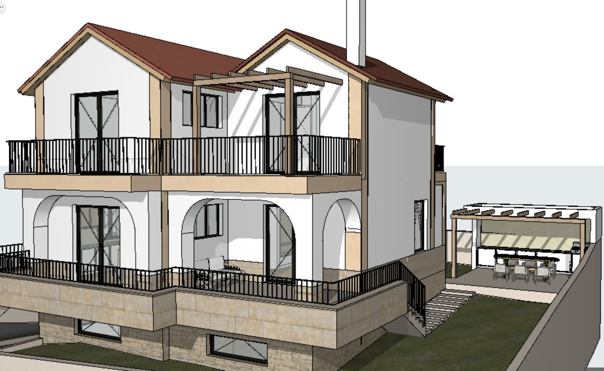
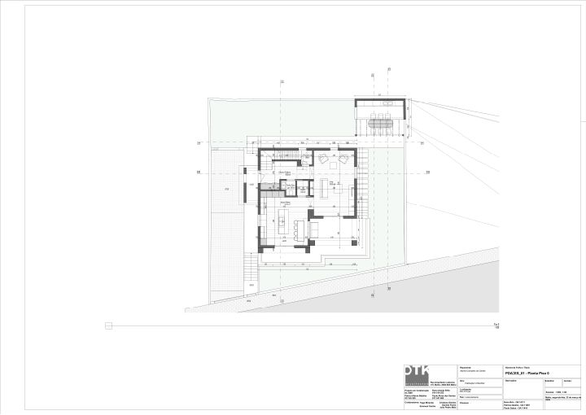
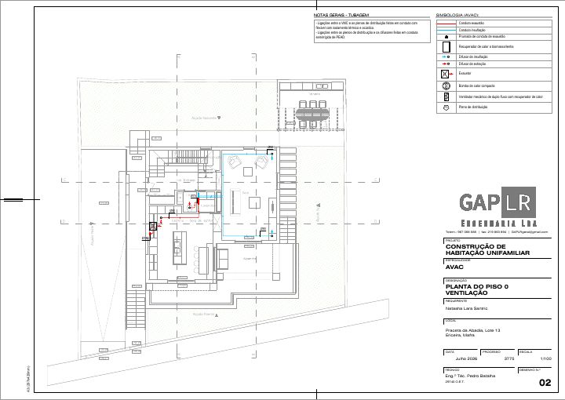

Casa Abadia
Shared project archive for the people building this house with us: plans, engineering, the Wood Home technical file, our technical choices, photos and a progress journal.

- Owners
- Natasha Santric and Sébastien Maillard
- Location
- Abadia, Ericeira, municipality of Mafra, Portugal
- Type
- Primary residence. Prefabricated timber frame, two floors, on an underground concrete garage
- Architect
- OTK Arquitectos (Paulo Santos)
- Main contractor
- Bacofra (Gonçalo Batalha)
- Timber structure
- Wood Home, Jaworzno, Poland
Location
 Open the pin on Google Maps
Open the pin on Google Maps
Approved building parameters
From the Câmara de Mafra approval of the comunicação prévia, received 5 Nov 2026.
- Construction area
- 277.55 m²
- Footprint (implantação)
- 109.15 m²
- Volume
- 775.83 m³
- Height
- 7.77 m
- Levels
- 2 floors plus basement
Milestones
| Date | Event |
|---|---|
| Jul 2026 | Visit to the Wood Home factory in Jaworzno |
| 26 Aug 2026 | Engineering plans amendments, revision 2, issued to all trades |
| 5 Nov 2026 | Building permit approved by the Câmara de Mafra (comunicação prévia) |
| Nov 2026 | Bacofra confirmed as main contractor. Construction contract in preparation |
| 10 Nov 2026 | Visit to Jelle: YTONG blocks under the wood panels |
| 13 Nov 2026 | Visit to the land |
Later milestones are added in the journal as they happen.
Where to find things

Plans and 3DFloor plans, 3D model, engineering plans and amendments. Wood HomeWall build up, scope, timber protection, technical documents.
Wood HomeWall build up, scope, timber protection, technical documents.

Technical choicesHVAC, water, earthing and lightning, basement waterproofing.Team
TeamWho does what and how the contracts are organised.
Photos
PhotosThe land and the factory visit in Poland.
Journal
JournalProgress on site, most recent first.